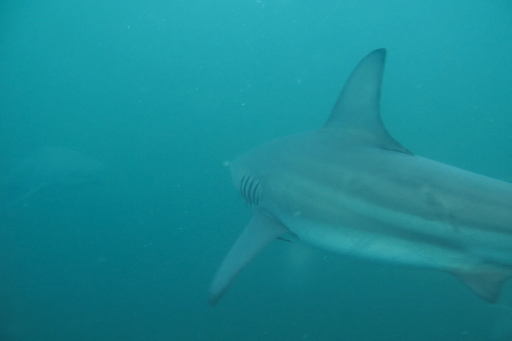

Protea Banks
Shelly Beach, KwaZulu-Natal, Afrique du Sud · plongée

Récif fossile situé à environ 7 km au large de Shelly Beach, réputé pour ses plongées avec les requins (requins-taureaux, requins-tigres, requins-marteaux selon la saison). Le point indique la mise à l’eau de Shelly Beach, pas le site lui-même.
- Lieu
- Shelly Beach, KwaZulu-Natal, Afrique du Sud
- Niveau
- Expert
- Activités
- plongée
- Type d'eau
- Mer / océan
- Coordonnées
- -30.80, 30.42 (position approximative du secteur)
Dangers à connaître
- Courants forts et plongées profondes : réservé aux plongeurs expérimentés et certifiés.
- Mises à l’eau en bateau à travers le shore break.
Le conseil d'Ocean Buddy
Plonge uniquement avec un centre local : les départs se font en semi-rigide depuis la plage, à travers les vagues.
Ouvrir dans Ocean Buddy Télécharger sur l'App Store
Source : Fiche Ocean Buddy · septembre 2026 · à vérifier localement.